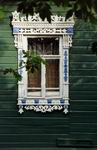

На открытках представлены снятые крупным планом яркие и красочные образцы окон из Енисейска и Красноярска.
На Юге и востоке главное в доме - дверь. Окон мало и днем они, как правило, закрыты от жары и солнца. В северной стране России окно стало внешним украшением жилища. Фотограф видит окна снаружи. Как художник он е мог обойти вниманием аккуратное окошко, где наличники гармонично сочетаются с тюлевыми занавесками и комнатными цветами на подоконнике.

“Енисейские окна”
На Юге и востоке главное в доме - дверь. Окон мало и днем они, как правило, закрыты от жары и солнца. В северной стране России окно стало внешним украшением жилища. Фотограф видит окна снаружи. Как художник он е мог обойти вниманием аккуратное окошко, где наличники гармонично сочетаются с тюлевыми занавесками и комнатными цветами на подоконнике.
Номер изделия: 7845-С
10 открыток для записей - 50 rub. ,
10 почтовых открыток - 40ru.

“Другие енисейские окна”
По окнам в России легко составить представление о жизни обитателей дома.